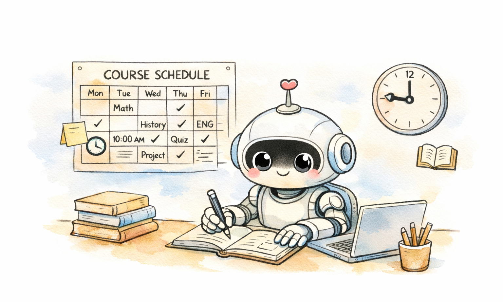
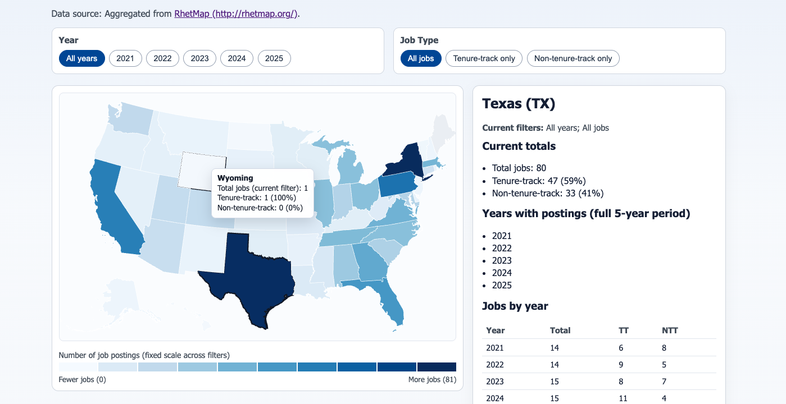
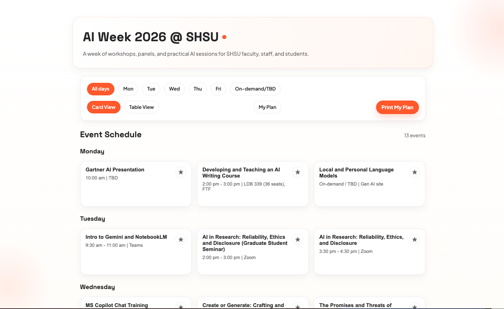
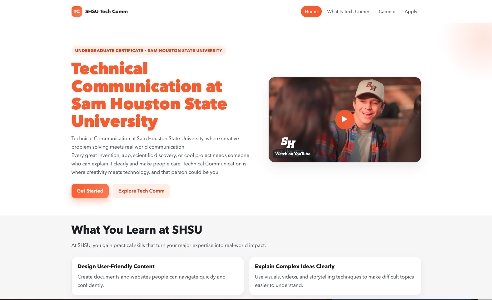

AI Lab
AI × Humanities: My Vibe Coding Projects
Fun personal projects and service contributions for my program and the university as an AI Faculty Fellow.

AI Course Scheduling Tool
An AI-assisted course planning tool I am developing to help small academic programs create clear, predictable semester schedules and support long-term curriculum planning.

Where Are Our Jobs?
I built this interactive data map that highlights where rhetoric, writing, and technical communication academic jobs appear across the U.S. and how TT/NTT positions have changed over the past 5 years.
Burning Books
An experimental interactive project I created to help readers experience Fahrenheit 451 and the work of Jorge Luis Borges through simple visual storytelling.

AI Week Interactive Calendar
A dynamic, data-driven event calendar I built for our university’s multi-day AI Week schedule, allowing users to quickly filter sessions and print their personalized itinerary.

Technical Communication Program Promotional Site
A program introduction site I created to present the Technical Communication certificate and minor pathways at Sam Houston State University.